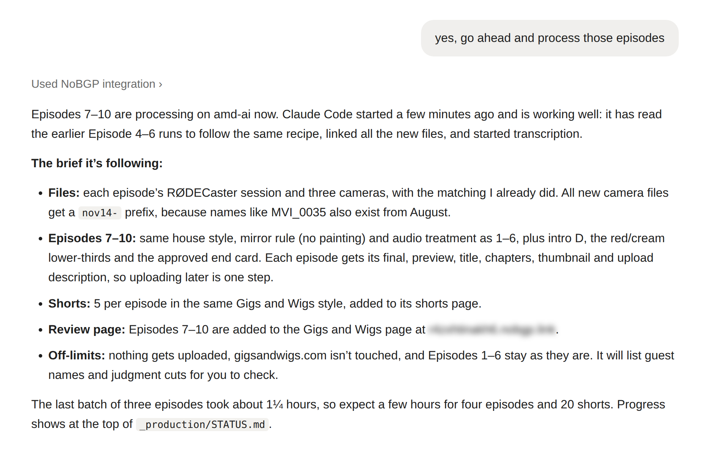
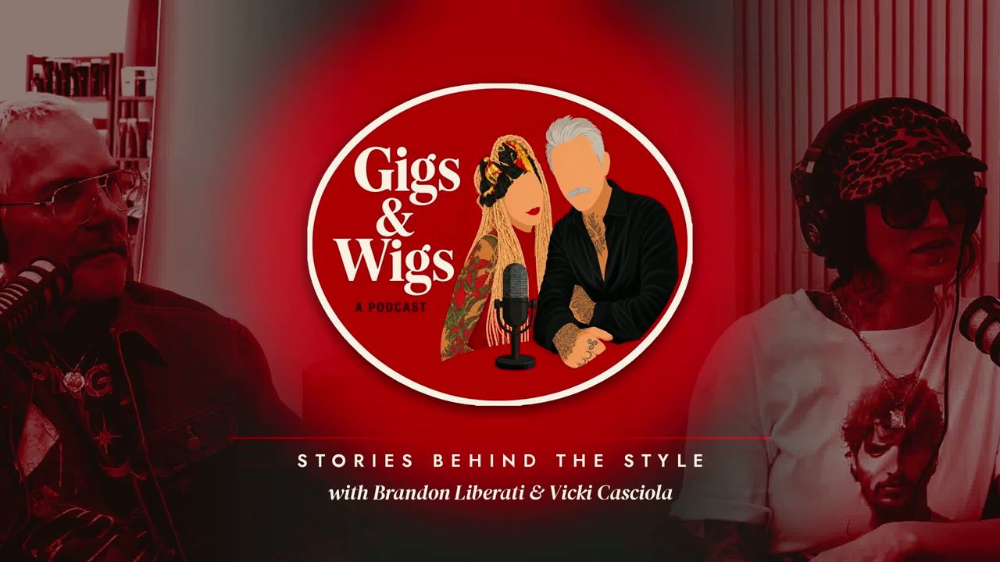
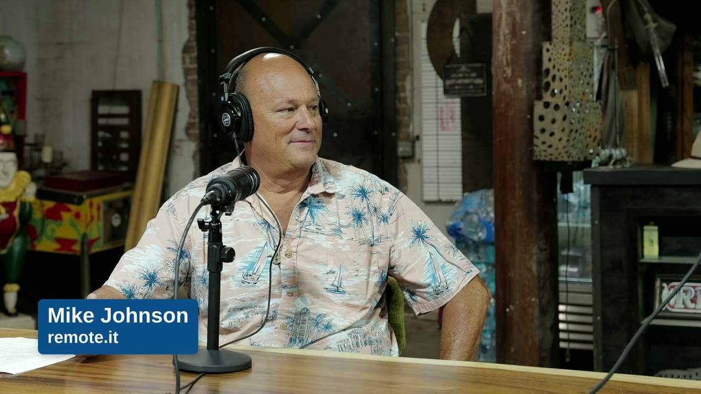
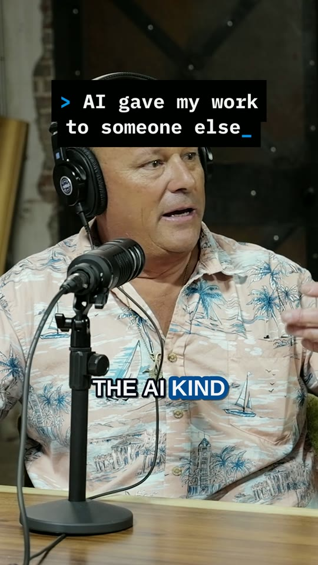
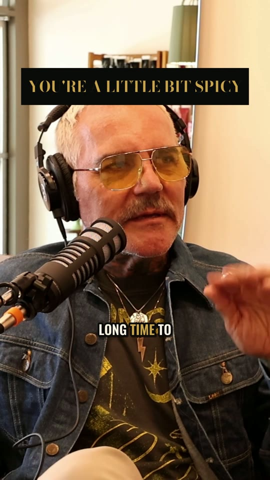
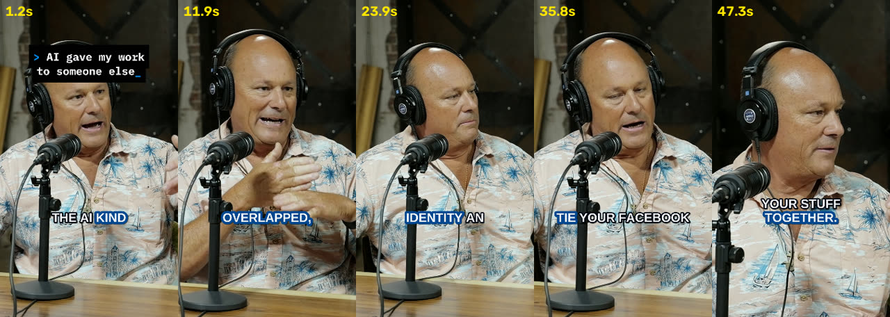
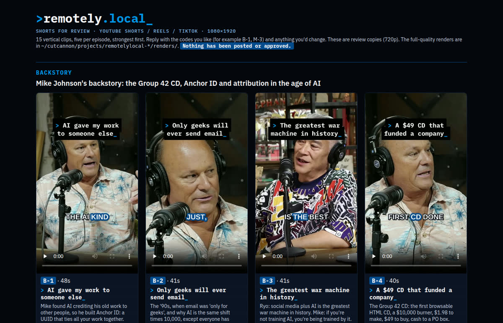

How I produce multiple podcasts with Claude

I produce several podcasts: two that I host, Remotely Local and Agentically Mine, plus some shows I help friends with, like Gigs and Wigs. Each one gets a full YouTube episode and a set of vertical shorts, and all the episodes are hosted on Castopod, a Podcasting 2.0 platform. With AI and a dedicated headless computer, the whole workflow is now automated.
This is the exact workflow, step by step, with the prompts I actually use, so you can copy it. It works for one show, and it scales to many because every show runs through the same pipeline with its own brief.
Special kudos to @mycal_1 (my co-founder for three different startups), who really is the brains behind the software stack that runs on the machine and maintains the CutCannon repo!
What you need
- One machine with a GPU and lots of storage. Mine is a Linux box with an NVIDIA RTX 4070 Super. Raw multi-camera footage adds up fast, so plan for terabytes. An Apple Silicon Mac mini also works.
- Claude Code on that machine. It does the actual editing work.
- video-use, an open-source Claude Code skill for editing long-form video from a brief.
- CutCannon, an open-source toolkit for vertical shorts (more on it in Step 6).
- ffmpeg and a transcription model. Both tools use them under the hood.
- A way to drive the machine remotely. I run everything from Claude chat on my laptop or phone. The machine is on my noBGP network, so Claude can run commands and read files on it. SSH or any remote-access setup you already trust will do the same job.
No cloud render service, and the footage never leaves the box.
Step 1: One folder per show
Give every show its own folder, and every client its own folder tree. Inside each show:
- A folder per episode with the raw camera files and the multitrack audio
- A production folder with the show’s brief, brand assets and a status file
- An output folder for edits, shorts and review pages
This matters more with several shows than you’d think. Claude reads the folder it’s pointed at, so a clean tree means one show’s style never leaks into another’s.
Step 2: Write a style brief per show
The brief is the most important file in the whole setup. It’s a markdown file that tells Claude how this show is edited.
For an existing show, don’t write it by hand. Give Claude links to your published episodes and let it study them.
Prompt: learn an existing show’s style
Here are the published episodes of my show: [YouTube links].
Download them and study how they're edited: how much is cut,
how often the shot changes, the intro and outro, lower-thirds,
captions, loudness and chapters. Write the house style into
BRIEF.md in the show's production folder. Don't edit anything yet.For a new show with no back catalog, start with a brand kit and refine the brief after the first episode. That’s how Gigs and Wigs started.
Prompt: brand kit for a new show
This is a new podcast called [name], hosted by [host] and [host].
Make a brand kit: three logo directions, a color palette, a short
intro, an end card and lower-thirds. Put them on a review page
for me before you use any of them in an edit.
Each brief also lists the fixed things: hosts’ names and spellings, the intro to use, and what must never be changed.
Step 3: Sync cameras and audio
Camera files and a separate audio recorder (I use a RØDECaster) never start at the same moment. In one of my sessions the audio ran about 19 seconds longer than the camera file.
Ask Claude to line every camera up to the audio by matching the waveforms, and to write the offsets down. It also catches problems you’d otherwise find late: a camera file that belongs to a different episode, a duplicate copy, or a guest whose video was never recorded.
Do the sync once per episode. Both the long-form edit and the shorts reuse it.
Step 4: Edit the long-form episode
Run Claude Code with video-use in the episode folder and point it at the show’s brief. A first pass on a 30-minute episode is a single prompt.
Prompt: edit an episode (sent from Claude chat)
New Remotely Local episode in /videos/remotely-local/backstory:
two cameras plus the RØDECaster multitrack. Use video-use with
the show's BRIEF.md. Sync both cameras to the Stereo Mix,
transcribe only the mix, and edit end to end without stopping
for approval. Output edit/final.mp4, chapters.txt, a YouTube
description, and edit-notes.md with a NEEDS HUMAN CHECK list at
the top. Run it headless on the machine and tell me when it's done.The heavy lifting lives in the brief. Here’s the core of mine, trimmed:
Excerpt: BRIEF.md
## Editorial
- KEEP the hosts' commentary, asides and opinions. Only cut host
material that is pure logistics, crosstalk or a restart.
- Trim filler at word level ("um, you know", false starts) and hide
each trim with an angle change or b-roll. No visible jump cuts.
- Cut pre/post-show chatter. End on the last real line of the outro.
## Multicam
- Hard cuts. Stay on the speaker; no reaction cutaways mid-answer.
- Side-by-side banter: 50/50 split, each camera center-cropped.
- Shortest shot ~2 s, average around 10–12 s.
## Graphics
- Intro wordmark, house lower-thirds (~3 s), end card.
- No burned-in captions on the long-form.
## Audio / output
- -14 LUFS integrated, true peak ≤ -1 dBTP.
- 1920x1080 H.264 → edit/final.mp4, plus a small preview.mp4.What it does with that brief:
- Trims filler and false starts at the word level, not just long pauses
- Switches cameras on whoever is talking, with 50/50 splits for banter
- Adds b-roll, lower-thirds, intro, end card and chapters
- Works with whatever cameras exist: three angles, or one camera with punch-ins

Compare the first cut against an episode you edited by hand. My first one was too clean, so the brief now says to keep the host asides and commentary. That’s the personality of the show.
For revisions, don’t re-prompt from scratch. Write each round of notes as a numbered addendum file and have Claude apply it. You get a clear history of every change, and you can re-run any of them.
Prompt: a revision as an addendum
Write ADDENDUM-2 for Gigs and Wigs episode 1 and apply it:
- Use intro D as-is.
- Handle the crew visible in the salon mirror with cuts or zooms
only. No patches or blurs, and never alter the hosts.
- Keep the current final as final-pre-add2.mp4 before re-rendering.Step 5: Clean up the audio
Ask for a few treatment samples instead of one fix. My room had a 120 Hz hum and low rumble, so Claude rendered three options (hum notch, light noise reduction, limiter in different strengths). I listened and picked one, and it went into the brief as the default chain.
Prompt: audio options
The mix has a hum and some low rumble. Make three 30-second
samples from the same passage with different treatments, from
light to strong, and put them on a page so I can A/B them.Two things to check every time:
- Sync after processing. Some noise-reduction filters add a few milliseconds of delay. Mine added about 26 ms, enough to make lips look off. Have Claude measure and correct it.
- Individual mics. On one episode, one mic was about 15 dB noisier than the rest. Rebuilding the mix from the separate mic tracks, with that one gated, fixed it.
Step 6: Cut the shorts with CutCannon
CutCannon is an open-source toolkit that turns a recording into finished vertical clips on your own GPU machine. You drive it in plain English from Claude: Claude chat reaching the machine remotely, or Claude Code running on it. It ships two Claude skills, an editor and an idea picker, comes with a look per show (brands), and writes the social media copy for every short. Nothing in it uploads or posts.


Two of the brands that ship with CutCannon: terminal for Remotely Local, gold for Gigs and Wigs.
How it works
- Transcribe. Whisper on the GPU gives sentence lines with word timings. Fillers stay visible as
(um)so they can be cut precisely. - Plan. Claude reads the transcript and writes an edit plan: which lines make each clip, the hook text, whose face to follow. Plans are versioned (
v001,v002…) and never overwritten, so “undo” is just a pointer. - Render. Tightens fillers and pauses, crops to 1080×1920 following the speaker through camera switches, burns in word-by-word captions and a hook card, and loudness-normalizes to −14 LUFS.
- QA. Every render gets checked automatically: A/V sync, duration, color, loudness, caption coverage, the hook card, leftover fillers (it re-transcribes the output), joins (words clipped or doubled at a cut) and framing. That’s nine checks, plus a contact sheet for each render.
- Post kit. For every short it writes a
_post.mdwith the title, description and hashtags for YouTube Shorts, TikTok and Instagram Reels, plus a cover image and a caption file.
A plan is a small JSON file, which is why it’s easy for Claude to write and for you to read:
{ "shorts": [{
"id": "s1",
"hook_text": "AI gave my work to someone else",
"clips": [
{ "from": "L148", "to": "L152", "track": "left" }
],
"word_fixes": { "remote it": "remote.it" }
}]}
Install is three lines; setup.sh picks the right backend (CUDA on Linux, Metal on Apple Silicon) and installs the two skills:
git clone https://github.com/lowerpower/cutcannon.git
cd cutcannon
./setup.shPrompts: one episode, interactively
This is the back-and-forth when I want to be hands-on. Each message is a chat turn:
Recommend 5 clips from remotelylocal-backstory.
→ Generate the first one.
→ Open on the second story and lose the last sentence.
→ Undo that.
→ Approve s1.
→ Write the post kit for s1.If you just say “Let’s make some clips,” it asks which project, shorts or cleanup, and how many (or “auto” to propose as many as the material supports). It always proposes before rendering.
Prompt: a brand per show
Create a CutCannon brand for Remotely Local from the show's look:
the typed-terminal wordmark from the intro, a monospace hook card,
and clean sans captions with the highlight color from our
lower-third.A brand is a small brand.json: caption font, colors, the highlight on the spoken word, and the hook card. CutCannon ships two, terminal and gold, and Claude shows you a preview still before you use a new one.
Prompt: every new episode, headless
Make shorts for the three new Remotely Local episodes, headless.
Copy each episode's final.mp4 into its own CutCannon project.
- 5 vertical clips per episode, 20–60 s, strongest hooks first,
each one self-contained.
- Use the remotelylocal brand. Captions, 2.5 s hook card,
speaker-tracking crop, fillers removed, -14 LUFS.
- Name fixes: Ryo Koyama, Mike Johnson, remote.it, noBGP, plus
any guest names the edit notes confirm.
- Run QA on every render. Build a review page with all 15.
- Write the post kit for each short.
- Don't upload, post or approve anything.Also give each show a name-fix list. Transcription misspells names constantly, and it’s the most visible error in a short.
Step 7: Review on a simple web page
Have Claude build a small review page for each batch: every render with a player, the clip’s title and hook, suggested captions, and a short “needs a human check” list.

Serve it from the editing machine and open it from anywhere. I publish mine through noBGP, which gives the page a private link without opening a port on my network, and watch on my phone. remote.it or SSH port forwarding work too. For client shows, a password-protected review page lets the hosts watch drafts without downloading anything.
Step 8: Queue every show overnight
With several shows, this is where the time comes back. Before bed, I tell Claude what’s next and it writes a queue script on the machine. The script runs headless Claude Code jobs one after another.
Prompt: overnight queue
Set up an overnight queue on the editing machine, one job after
another, each with a timeout and its own log:
1. Re-cut the Backstory episode with the second camera that
just arrived.
2. Edit the Music and BatFast episodes.
3. Make shorts for all three.
4. Wait for the client's footage upload to finish, then apply
ADDENDUM-9 to Gigs and Wigs.
Write a line to OVERNIGHT-STATUS.md as each job starts and ends.
Launch it detached so it survives a dropped connection.
Nothing gets uploaded.Ask Claude to launch the queue detached (noBGP’s detach option, or setsid/nohup over SSH) so it keeps running if the connection drops. Then pick the chat up from your phone in the morning and ask how the night went. The answer comes from that status file.
Step 9: Publish by hand
Nothing uploads, posts or approves itself. Every brief ends with that line, and it’s the one rule I’d keep no matter what.
Once I approve, publishing per show looks like:
- Full episode to YouTube (I upload client drafts as unlisted first)
- Audio to the podcast feed (I use Castopod, which feeds Apple and Spotify)
- Episodes embedded on the show’s website
- Shorts posted to each platform, with the title, description and hashtags from each short’s
_post.md
Tips
- Make every correction permanent. When you fix something, put it in the brief, not just this episode. The edits get better every week.
- Write “never touch” rules. On one client show, people in a salon mirror had to be removed. The rule was: least intrusive fix first (reframe, then patch, then blur), and never alter the hosts.
- Ask for a NEEDS HUMAN CHECK list. Uncertain name spellings, guessed titles and odd cuts go at the top of the edit notes, so you know exactly what to watch.
- Keep the old render. Save the previous final before each revision, so you can always go back.
- Expect missing footage. Remote guests often have no video recorded. Decide early whether that episode is audio-only or uses the call recording.
- Start with one show. Get one brief right, then copy the structure for the next.
The hours of syncing, cutting, captioning and rendering are gone. What’s left is the part I actually like: choosing what goes out.